collection
|
-カバクンリョコウキ3-秋の奈良へトリップ！編その2（2008）-今回はプチトリップではなくトリップです。 
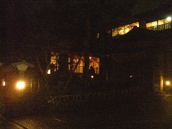 宿に到着しました。 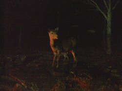 暗くてよくわからないのですが、鹿がいっぱいでした。 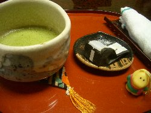 お抹茶とようかん。ほっとします。 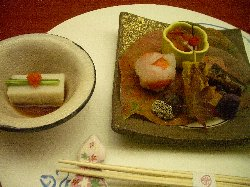 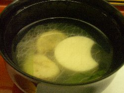 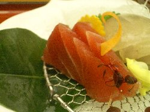 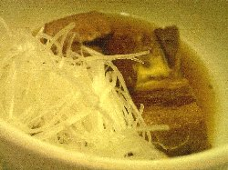 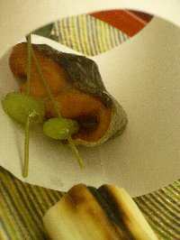 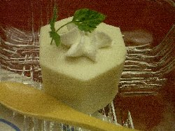 お料理の一部です。途中で撮影するのも忘れていただきました（笑） 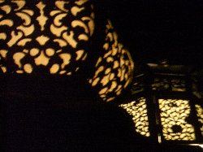 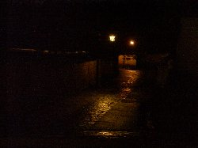 夕食を頂いた後、少し散歩に出掛けてぱちり。 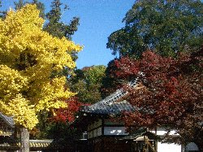 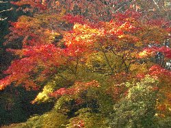 今日は晴天です。紅葉がとても美しいです。 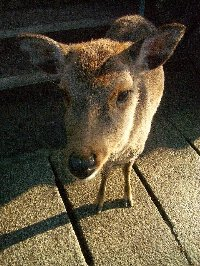 鹿。かわいいなぁ〜＾＾ 気が付くと後にいる（笑） 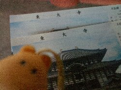 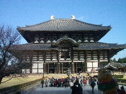 東大寺へやってきました。聖武天皇が建立した寺です。 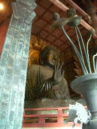 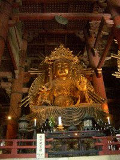 左から盧舎那仏、虚空蔵菩薩像。 家族の都合であまりいろいろ行くことが出来ませんでしたが、 -秋の奈良へトリップ！編おわり- Copyright(c) 2008 なないろまーぶる All rights reserved |